Take-on Creditor Opening Balances
Which records is required from your previous accounting system to take on opening balances for creditors (suppliers/vendors) in osFinancials5/TurboCASH5?
When transitioning to a new accounting system like osFinancials5/TurboCASH5 and taking on opening balances, you will need certain records and information from your previous accounting system. Here are the essential records and data you should have for creditors (suppliers/vendors):
- Trial Balance: Obtain a copy of the trial balance from your previous accounting system. This trial balance should include the closing balances of all your accounts at the end of the previous accounting period. It will serve as a starting point for entering opening balances in osFinancials5/TurboCASH5. The total balances of Creditor's control account (Accounts payable account) should be entered.
- Creditor (Accounts Payable) Reports: These reports show the outstanding balances you owe to your suppliers or creditors. You should obtain records of outstanding invoices, bills, and supplier statements as of the transition date. This information is necessary for accurately setting up your accounts payable balances and creating accurate opening balances for your creditor accounts in osFinancials5/TurboCASH5.
- Creditor (Supplier/Vendor) Information: Information about your creditors (suppliers/vendors), including contact details, credit terms, and outstanding balances, can be helpful for setting up accounts receivable and accounts payable in osFinancials5/TurboCASH5.
- Supplier Invoices and Statements: It can be helpful to have copies of supplier invoices and statements, particularly if there are any discrepancies or disputes that need to be resolved during the transition.
- Aged Payables Report: An aged payables report shows how long each payable has been outstanding. It can be useful for accurately ageing your outstanding creditor balances in osFinancials5/TurboCASH5, especially if you plan to use the ageing facility in the osFinancials5/TurboCASH5.
Having these records and data readily available will make the process of taking on opening balances in osFinancials5/TurboCASH5 smoother and more accurate. It's essential to maintain accuracy during the transition to ensure the continuity of your financial records and reporting.
Steps to take-on opening balances for creditors
Taking on opening balances for creditor accounts is an essential step in the accounting process, especially when transitioning to a new accounting system, like osFinancials. Here's a step-by-step guide on how to do this using osFinancials5/TurboCASH5:
- Add Creditor (Supplier/Vendor) accounts: Create or add each individual creditor (supplier/vendor) account. Each individual creditor (supplier/vendor) account should contain specific information about your creditors (suppliers/vendors), including postal and delivery addresses, contact details, credit terms (including credit limits) tax and registration numbers, and more. You could use the Filter and search options to verify the details and or using Creditor listing reports to verify the correct details.
- Set Up an "Opening Balances - Creditors" Account: In osFinancials5/TurboCASH5, create a new account called "Opening Balances - Creditors." This account will be used to record the total opening balances for all your creditor accounts. This Opening balance should match the total amount in the Creditors control account (Accounts payable account) and would be processed when Taking on the Trial Balance of the General ledger accounts.
- Process Journal Entries: Create journal entries to allocate the outstanding amounts to individual creditor accounts. The journal entries should debit the "Opening Balances - Creditors" account and credit the respective creditor accounts.
Example Journal Entry:
- Debit: Opening Balances - Creditors
- Credit: Supplier A (Individual Creditor Account)
Repeat this process for each creditor account until all opening balances have been allocated.
If you wish to utilise the ageing feature in osFinanacials, when entering the opening balances in individual creditor accounts, you need to capture the outstanding balances at the end of each accounting period as per aging reports or lists from your previous accounting system. a breakdown of each individual to track and manage the ageing of outstanding accounts payable. This will help you monitor how long each payable has been outstanding, which is essential for managing cash flow and supplier relationships.
- Import or Enter Opening Balances: Import or manually enter the opening balances for your creditor accounts into the "Opening Balances - Creditors" account. These balances should represent the amounts you owe to your suppliers at the beginning of the accounting period.
- Verify the Totals: Double-check that the total outstanding amount in the "Opening Balances - Creditors" account matches the total opening balances in your trial balance. It's essential to ensure accuracy at this stage.
- Utilize the Ageing Facility: When entering the opening balances are correctly recorded in individual creditor accounts, you can utilize the ageing facility within your accounting software to track and manage the ageing of outstanding accounts payable. This will help you monitor how long each payable has been outstanding, which is essential for managing cash flow and supplier relationships.
- Reconcile and Review: After processing the journal entries, reconcile the individual creditor accounts to make sure they match the opening balances from your trial balance. This step ensures that all amounts have been correctly transferred.
- Regularly Update Creditor Accounts: Going forward, continue to update your creditor accounts with new transactions, purchases, and payments as they occur. Regularly reconcile these accounts to ensure accuracy.
Remember that accurate recording of creditor balances is crucial for financial reporting and maintaining good relationships with your suppliers. Always consult your specific accounting software's documentation and guidelines for the most accurate and up-to-date instructions on handling opening balances and creditor accounts.
By following these steps, you can accurately capture outstanding balances at the end of each accounting period for individual creditor accounts in osFinancials5/TurboCASH5 and utilise the ageing feature to track the ageing of accounts payable effectively. This approach ensures that your financial records reflect the true state of your accounts payable and helps with financial reporting and cash flow management.
Example: Source document - Creditor Age Analysis
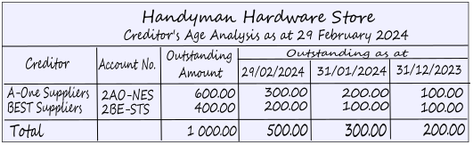
Opening Balances - Creditors
These transactions can be replicated in HANDYMAN, HANDYMAN-A en HANDYMAN-B Tutorials Sets of Books.
The transactions for opening balances in the ledger should already include the total outstanding balances in an "Opening balances - Creditors" account. This total outstanding balances need to be allocated and processed for each individual creditor (supplier/vendor) account.
To enter Opening Balances for your Creditor accounts:
- On the Default ribbon, select Batch entry (F2).
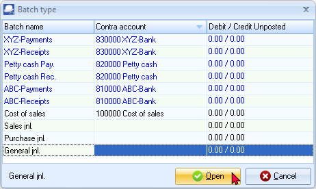
|
|
If no contra account, or a different contra account than the contra account you wish to use, is displayed on the Batch type selection screen, you need to set up the options for the batch. If you have not yet set up the General journal, or if your requirements should change, click on the F10:Setup icon. |

- Select the General Jnl and click on the Open button.
- Enter the Alias (batch name) in the Change alias field on the Batch entry screen. (In this example, "C-OpenBalances" is used for Creditor Opening Balances).
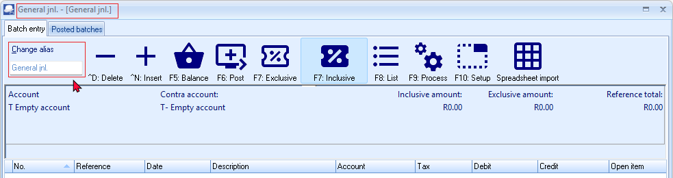
Batch settings
Before you can process transactions for opening balances, you first need to setup or configure the batch (journal). The setup "Options for this batch", consists of two tabs, i.e. Standard tab and Advanced tab.
- Click on the F10:Setup icon to set your batch up. The "Options for this batch" screen will be displayed. The settings are basically the same as for the Opening Balances of the General ledger account. Change the Batch Settings as follows:
- Standard tab – Select the Contra account for "Opening Balances – Creditors (2CO-PEN)" and set Amount entry to Credit.
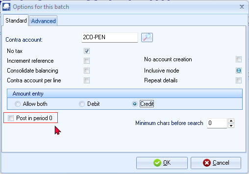
- Advanced tab – Set the "Account lookup type" and the "Contra account lookup type" both to Creditors.
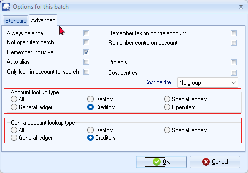
- Once setup, click on the OK button.
Process Opening balance transactions : Debtors
- Find your source document.
- Enter the following transactions:
|
|
The Opening Balances – Creditor account should reflect the total of all Creditor accounts (in the Creditor's control account). You only need to list (select) the individual creditor accounts and enter their balances. You may enter only the total outstanding balance (i.e. 1000.00 as per this example) as at 29 February 2024 for each creditor account (2 entries). If you wish to optimise the ageing facility in osFinancials5/TurboCASH5, you may enter the balances for each creditor account as at the end of each period, e.g. 29 February 2024 – 500.00, 31 January 2024 – 300.00 and 31 December 2023 – 200.00. |

- Click on the F5: Balance icon. osFinancials will generate balancing entries for each period. After entering the individual balances for each period, and balancing the batch, the transactions should be displayed as follows:
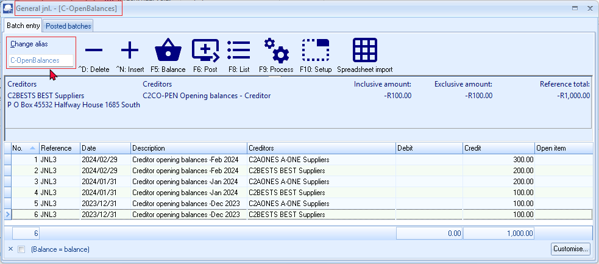
- Click on the F5:Balance icon to generate balancing transactions.
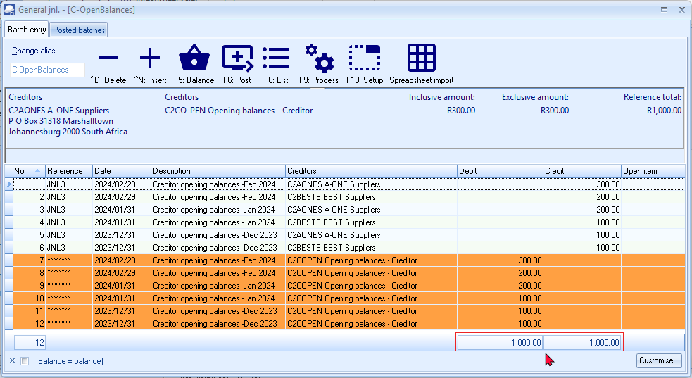
|
|
You may click on the F9: Process icon and select the Totals per Period option. This will list the totals of all the Debit entries and all the Credit entries for each period. The difference should be zero. 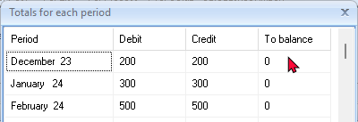 |
- Click on the F8:List icon to print a list of the transactions in the batch.
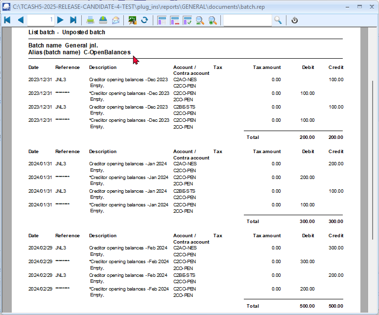
- Click on the F6:Post icon, to post (update) the batch to the ledger. A confirmation message will be displayed.
“Do you want to continue posting? Batch contains transactions posting to last year!”
- Click on the Yes button, or press the Enter key to continue.
|
|
If you click on the No button, the transactions will not be posted. |

- osFinancials5/TurboCASH5 will post the entries for each period to the ledger.
T-Account view : Creditor - Opening balances
The Opening Balances – Creditor account should have a zero balance after balances were credited to the individual Creditor accounts.
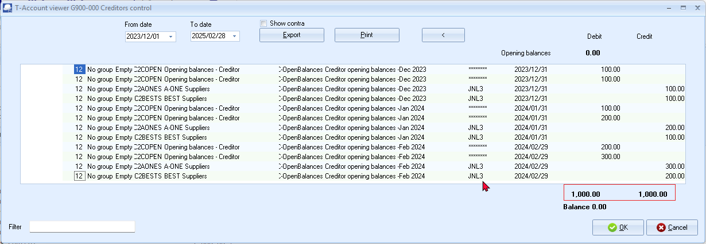
The Batch for Opening Balances (e.g. BatchID 12) should have a zero balance (debit transactions in Opening Balances – Creditor account = credit transactions individual Creditor accounts).
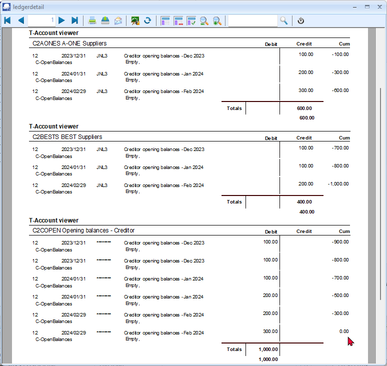
Age analysis view : Creditor - Opening balances
The Creditor age analysis report for 30 March 2024 (Reports → Creditors → Age analysis - Balances detail) will display the totals for each period as follows:
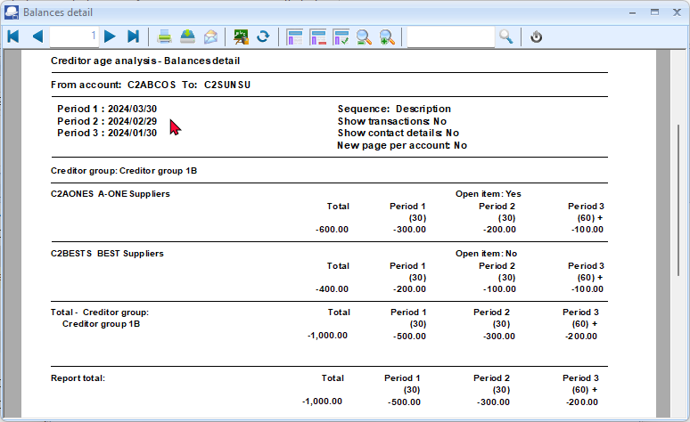